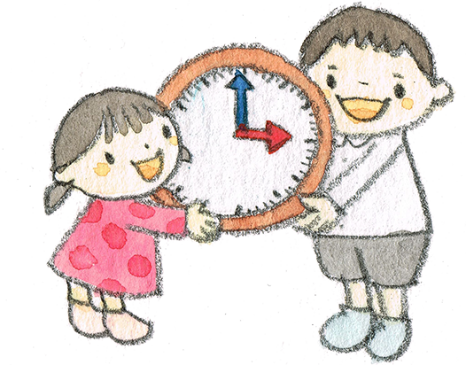

つくし組・こひつじ組の子ども達が順次登園。
全員登園します。
違う組の子ども達と仲良し！
兄弟姉妹の様に縦割り保育で、登園した子ども達が自由に遊びます。
乳児さんにも優しく大切にしてあげるよ。
みんなで神様にお祈りをして、一日を始めます。
先生と一緒に歌を歌ったり絵を描いたり身体を動かしたり、みんなで一緒に取り組みます。各学年の発達に合わせた取り組みを行う日も、縦の繋がりを大切にする縦割り保育の日もあります。
学年によって設定保育の時間は変わります。
乳児さんは、朝の集まり・朝のお散歩・園庭・屋上園庭遊びなどをして過ごします。
いっぱい食べて元気いっぱい！
月・水・木曜日は全園児、給食室で作られた温かい給食を食べます。
火・金曜日は、幼稚園部門の子どもはお家から持ってくるお弁当。保育園部門の幼児は給食室で作ってもらうお弁当給食を食べます。
乳児クラスは、一週間給食を食べます。
お腹を休めた後は、みんなでたくさん遊びましょう～。
クラスをまたいで自由な空間で遊びます。
いっぱい遊んだ後は、大好きな先生に大好きな絵本や紙芝居を読んでもらいます。
乳児さんは夢の中…Zzz
また明日も遊ぼうね!
保育部門と幼稚園預かり保育の子ども達が一緒過ごします。
つくし組の先生に絵本を読んでもらおうね。
お腹すいた～!
給食室で作られたおやつを食べて力を充電!!
3・4歳児さんはお昼寝タイム
5歳児さんはゆっくり手仕事遊びを楽しみましょう。
大好きなお家の方が迎えに来て下さるまで、お家の様な安心感の中、みんなが兄弟姉妹のように大切にゆったりのんびり少人数で遊びます。
こひつじ組さんも合流･･･今日も楽しかったね♪。
楽しかった一日を心に詰め込んで、全員お家に帰ります。
園の一日がおわります。